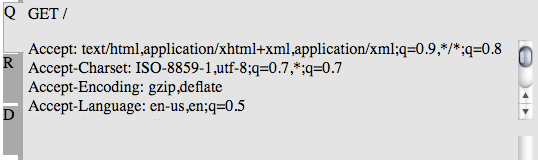
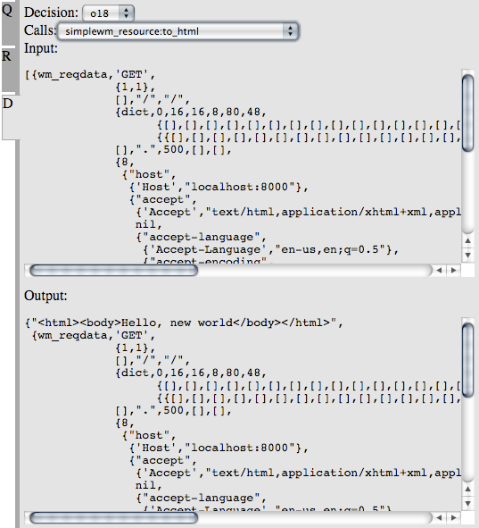

webmachine
Webmachine debugging
Having trouble with your webmachine resource? Try debugging it with the webmachine trace utility!
Basic Use
To get started, first change your resource's init/1
function to return {trace, Path} instead of
ok. For example:
init(Config) ->
{{trace, "/tmp"}, Config}. %% debugging code
%%{ok, Config}. %% regular code
Rebuild and reload the module, then in your webmachine application's shell, type:
wmtrace_resource:add_dispatch_rule("wmtrace", "/tmp").
Now issue the HTTP request that you're trying to debug. Once it has
finished, point your browser at http://YOUR_HOST/wmtrace/.
You'll see one or more trace files available for inspection.
Click on one of them to navigate to the trace inspection utility,
which will look something like this:

The example above is a trace of a resource that responded to a GET of the root path (as you can see in the Detail Panel), and ran all the way to a 200 response code (as you can see in the Decision Graph).
The graph starts small, so you can get a quick view of the path your resource took through it. You can zoom in and out of the Decision Graph by using the Zoom Controls.
The path your resource took through the graph is highlighted with a dark grey line. Hovering your mouse over the outlined decision points along that line will pop up a tool tip with the name of the decision, and the names of the functions in your resource that were called at that point. Clicking on a decision will flip the Detail Panel to the Decision Tab, where information about that decision will be displayed.
If your resource traversed the graph all the way to one of the standard, non-error return codes, the box for that return code will be outlined. If your resource instead returned a non-standard or error code, a red circle will be drawn next to the last decision point your resource reached. Clicking on either of these types of endpoints will flip the Detail Panel to the Response Tab, where information about the response will be displayed.
The Detail Panel has three tabs: Request (labeled Q), Response (labeled R), and Decision (labeled D). Clicking each of these will show information about the request, response, or current decision, respectively.

The Request Tab shows details about what the client requested. The method and path are displayed at the top, headers below that, and body (if available) at the bottom.

The Response Tab shows details about how your resource responded. The response code is displayed at the top, headers below that, and body (if available) at the bottom.

The Decision Tab shows details about the currently selected decision. The decision's name is displayed in a dropdown at the top (changing this dropdown or clicking on a decision in the graph will change which decision is displayed). The list of the functions called in the resource's module is displayed in a dropdown below the decision. The arguments with which the function was called are displayed just below the function's name, and the return value of the function is displayed at the bottom of the panel.
The Detail Panel can be resized by clicking and dragging the tabs or the dark grey border to the left or right. Clicking the border will toggle the panel's visibility.
Configuration Details
The Webmachine trace tool is divided into two parts: one produces the trace logs, while the other produces the visualization.
Trace Log Production Configuration
You may configure the path under which trace files are stored by
specifying that path as the Path part of your resource
module's init/1 return value. Every time a request is
made to that resource, a new trace file will be created in the
specified directory.
Warning: Trace files can be large. It is advised that you do not leave tracing enabled on a large-content-producing or high-hit-rate resource.
The path may be either absolute:
init(Config) ->
{{trace, "/tmp/traces"}, Config}. %% absolute path /tmp/traces
or relative to your application's root:
init(Config) ->
{{trace, "traces"}, Config}. %% "traces" directory in application's root
Trace Viewer Configuration
The viewer is configured by its entry in the
dispatch list.
Two functions make modifying that entry easy:
wmtrace_resource:add_dispatch_rule/2
and wmtrace_resource:remove_dispatch_rules/0.
Call add_dispatch_rule/2 with the HTTP-exported path, and
the path to the trace files. For example, to expose the viewer at
http://YOUR_HOST/dev/wmtrace/ and point it at the trace
files in /tmp/traces, type in your application's erlang
shell:
wmtrace_resource:add_dispatch_rule("dev/wmtrace", "/tmp/traces").
If you know that you always want the viewer enabled and configured in a specific way, you can also add a line like the following to your application's dispatch list:
{["dev", "wmtrace", '*'], wmtrace_resource, [{trace_dir, "/tmp/traces"}]}
To disable all trace viewer resources at any point, just execute
wmtrace_resource:remove_dispatch_rules/0 in your
application's erlang shell.
Trace Log Format
The trace file is fairly straightforward, if you want to read it with
less:
{decision, X}.indicates that a decision point was reached{attempt, Module, Function, Args}.indicates that a call toModule:Function(Args)was made.{result, Module, Function, Result}.indicates that the call toModule:Function(Args)returnedResult.{not_expored, Module, Function, Args}.indicates thatModule:Function(Args)would have been called, but it was not exported (or not defined) by the module
The format should be such that a file:consult/1 will
give you a list of the lines as erlang terms.
Special Handling for Funs and Pids
Funs and Pids don't roundtrip through file serialization very well
(file:consult/1 will blow up on a fun or pid written to a
file with io:format("~p", [FunOrPid])). To deal with
this, the trace logger prints a recognizable tuple translation instead
of the fun or pid.
Fun Translation
Funs you might see in Erlang source as fun io:format/2
will appear in a trace log as:
{'WMTRACE_ESCAPED_FUN',[{module,io},
{name,format},
{arity,2},
{type,external}]}
Those that would be in Erlang source as fun() -> ok end
will appear in a trace log as:
{'WMTRACE_ESCAPED_FUN',[{module,sampletrace_resource},
{name,'-to_html/2-fun-0-'},
{arity,0},
{type,local}]}
Pid Translation
Pids are simply logged in a marked tuple, after being run through
erlang:pid_to_list/1:
{'WMTRACE_ESCAPED_PID',"<0.74.0>"}